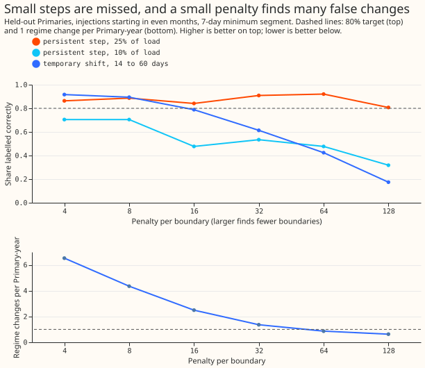
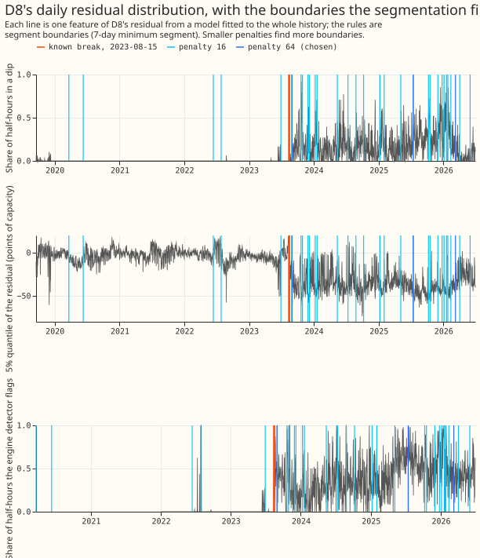
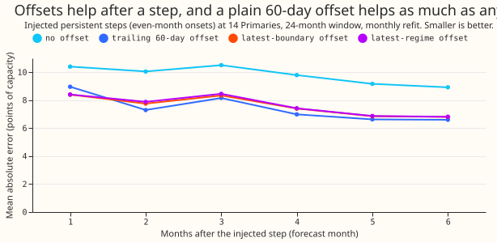

Can persistent regimes be segmented in a Primary's history without labels?
We asked whether a Primary substation's history can be split into regimes using only the errors of a forecast. The answer is partly. A Primary substation steps 33 kV down to 11 kV for homes and businesses. A regime is the whole period, without gaps, in which one configuration holds. For D8, a Primary whose meter began including a gas engine in August 2023, the regime is the whole period that includes the engine, even in the spells when the engine is off. Whether the engine runs, or a load shift (an operator moving part of one Primary's demand to another for days) is in force, is a state inside a regime.
The segmentation found a sudden, lasting change of 25% of a Primary's load and dated it with a median error of 0 days, but found only about half of the 10% changes. It also could not reliably tell a load shift from a lasting change. We fitted a generalised additive model (GAM), a forecast that uses no recent power readings and is fitted by convex least squares, to each Primary's whole history. We took the residual (the reading minus the forecast) and summarised each day by four numbers: the share of that day's half-hours with a dip (a residual more than 2.5 noise units below zero), the 5% and 95% quantiles of the day's half-hourly residuals, and the night-minus-day mean residual. A penalised search for the best split points (Killick et al. (2012)) then placed boundaries. The penalty sets how large a change in the four numbers must be before the search places a boundary, so a higher penalty gives fewer boundaries. A boundary is a state change when the four numbers return to their earlier values within 120 days, or a neighbouring Primary shows the opposite change within 3 days, and a regime change otherwise. We tested the segmentation on D8's break on 2023-08-15, on changes that we added to the recorded power of the other Primaries (lasting steps, and load shifts of 14 to 60 days), and on the unmodified series.
Verdict not supported: two of the four parts of the prediction held. The two recall
bullets below form one part. The penalty (64) and the minimum segment length (7 days) were chosen
on injections in odd months at 7 tuning Primaries. Every number below is from the 7 held-out
Primaries and even-month injections, except D8.
- D8's break (failed, narrowly). The nearest boundary is 2023-08-30, 15 days late. Penalties of 16 or less place the break on 2023-08-15 exactly, at 2.5 or more regime changes per Primary-year at the held-out Primaries (Figure 2).
- False regime changes (held). The segmentation found 0.87 per Primary-year (98.75% interval 0.46 to 1.39). Of 33 regime changes, 8 look like solar capacity steps (a daytime shift at least twice the night shift; PV is photovoltaic) and 15 fall in April to August.
- Persistent steps (failed). The segmentation labelled 70% persistent (0.58 to 0.85): 25% steps 89% to 95%, 10% steps 45% to 50% (Figure 1). Found steps are dated to a median of 0 days.
- Temporary shifts (failed). The segmentation labelled 42% as states (0.21 to 0.64): 27% at 14 days, 45% at 30, 55% at 60. A permanent transfer between two Primaries is labelled a state 73% of the time, as the prediction expected.
- Engine spell edges (held, trivially). After 2023-08-15 the engine detector (experiment 199) shows 121 times the engine switched on or off for at least 3 days. At penalty 64, 2% of these edges have a boundary within 3 days, and 2% at random dates, because only 3 boundaries remain. At penalty 16, 15% against 12% at random dates, with 19 regime-change boundaries inside the regime; at penalty 4, 39% against 29%.
- The 2026 fade. Penalties of 32 and above put a boundary on 2026-03-10, labelled unconfirmed (less than 150 days before the end of the data), where the dip rate falls by 0.15 to 0.23. The engine detector's flagged share falls from 0.53 (October 2025 to February 2026) to 0.43 (from 15 March 2026), so the residual cannot say whether a regime ended or the engine ran less.
Figures

Figure 1. Recall of injected steps and shifts against the penalty, and the rate of regime changes at the unmodified held-out Primaries. A larger penalty finds fewer false changes and fewer real ones.

Figure 2. D8's dip rate, 5% quantile, and engine detector flagged share, with boundaries at penalties 16 and 64 and the known break.

Figure 3. Forecast error after an injected step with no offset, with a trailing 60-day offset, with the latest-boundary offset, and with the latest-regime offset.
Forecast gain from an offset for the latest regime
- Setup. At each monthly cut (24-month window), the GAM's in-sample residual is segmented using days before the cut only. The latest-boundary offset is the mean residual since the latest boundary of any kind. The latest-regime offset skips boundaries labelled as states (by the return rule alone, with no neighbours) and the boundary that ends each state, and uses the mean residual since the latest remaining boundary. Scored over the month after the cut, for 6 months after each injected persistent step (14 Primaries pooled, 8 onset dates in even months, 4 step types: 10% and 25% of load, each flat or following the Primary's own demand). Intervals resample whole Primaries.
- Injected steps. Mean absolute error 9.81 points with no offset, 7.59 with the latest-boundary offset, 7.64 with the latest-regime offset, and 7.44 with the trailing 60-day offset. The latest-regime offset beats no offset by 2.17 points (98.75% interval -2.87 to -1.46) and is 0.20 points worse than the trailing offset (-0.07 to 0.47). The latest-boundary offset is 0.15 worse than the trailing offset (-0.12 to 0.40). Neither difference from the trailing offset is clear of zero.
- D8's real break. No offset 16.94, latest-boundary and latest-regime 16.93, trailing 16.09. The differences have intervals that include zero (6 cuts).
Checks
- Mean minus median forecast. Zero by construction: the GAM gives one point forecast.
- Quantile score beside the error of the mean. No quantile score is contrasted here.
- Audit triggers. One trigger fired: the known-answer test (D8's break) missed its 14-day bound
by one day at the chosen penalty. The explanation, that the penalty was set on injections and not
on D8, is tested by the penalty grid in Figure 2 and the sweep in
printed_report.txt. A fresh Sonnet agent (not Opus, on the manager's instruction to save credits) audited the derivations from the stored parquet files, and reproduced the chosen penalty (64, 7 days), the held-out recalls (0.699 persistent, 0.424 temporary), the 0.87 regime changes per Primary-year, and D8's dating (exact at penalties 4 to 16, 15 days late at 32 and above). It found no leakage. It found two small traps, now in the caveats. No other trigger fired; whether a later experiment depends on this result is not known to us. - Comparison with the first design. The first design segmented the daily mean level. On the 5
Primaries both designs ran (D10, D11, D12, D14, and D16, with a 14-day minimum segment), at the
same penalty the level design finds more 10% steps and temporary shifts but also more regime
changes per Primary-year. At a matched rate the two agree: the level design at penalty 64 (1.18
per Primary-year) has recall 0.73 for 25% steps, 0.34 for 10% steps, and 0.57 for temporary
shifts, and the distribution features at penalty 32 (1.38) have 0.69, 0.34, and 0.57
(
printed_level_only.txt).
Caveats
- The tuning choice is a tie. Penalty 64 with minimum segment 7 and with 14 have the same tuning objective, and D8 is dated 15 days late at both.
- A boundary already in the unmodified series can count as finding an injection. At the chosen setting, 14 of 308 held-out persistent and temporary injections have such a boundary within 14 days of the onset, and 10 of them were scored found, so persistent recall is biased upward by at most 8 of 176 injections (4.5 points).
- Injection dating. The injected step begins at the first half-hour after midnight on the onset date, and the match window runs from 13 days before to 15 days after that date. The stored dating error is relative to the following day, so the printed median adds 1 day.
- The injected steps are easier and harder than real ones. They are added to the recorded power at a fixed date with no change to the weather, and the GAM is fitted on the injected series, so month and weather terms absorb part of the step (a median of 2% for persistent steps and 6% for temporary shifts).
- The engine spells come from a detector that did not pass its gate (experiment 199,
night-only
v1), and the spell-edge share is not a measure of the engine's true spells. - D15 has no training rows, so 14 Primaries other than D8 were used, not the 15 planned. D9 and D18 have under two years of readings, so their onsets are fewer.
- The PV check approximates. Experiment 207's step path was not refitted. A PV-like change is one whose daytime shift is at least twice its night shift.
- Real regimes in the controls count as false changes, so 0.87 per Primary-year is an upper bound.
- Embedded Capacity Register context. The register lists one connected entry of 8.9 MW at D8, dated 2019 or later, which is probably the engine. We did not use the register.
What the next experiment should answer
- Whether a second signal, such as the engine detector's flagged share together with the dip rate, separates a regime change from an engine that is off, because the residual alone cannot.
- Whether a lower penalty with a rule that merges boundaries within 14 days, which keeps the D8 break exact, brings the false regime changes under 1 per Primary-year.